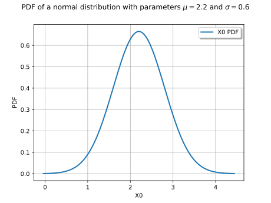
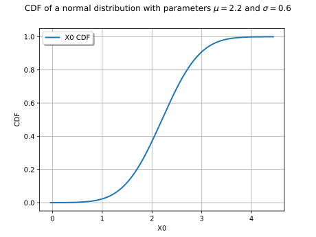
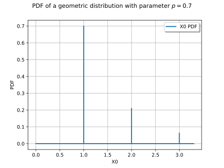
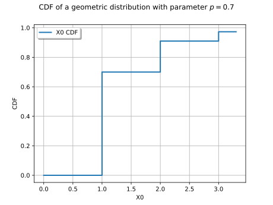

Note
Go to the end to download the full example code.
Create and draw scalar distributions¶
import openturns as ot
import openturns.viewer as otv
A continuous distribution¶
We build a Normal distribution with parameters:
![\mu = 2.2, \sigma = 0.6]()
distribution = ot.Normal(2.2, 0.6)
print(distribution)
Normal(mu = 2.2, sigma = 0.6)
We can draw a sample following this distribution with the getSample method :
size = 10
sample = distribution.getSample(size)
print(sample)
[ X0 ]
0 : [ 2.56492 ]
1 : [ 1.4403 ]
2 : [ 1.93704 ]
3 : [ 2.92329 ]
4 : [ 0.891169 ]
5 : [ 2.41003 ]
6 : [ 1.987 ]
7 : [ 3.06235 ]
8 : [ 2.6864 ]
9 : [ 2.67589 ]
We draw its PDF and CDF :
graphPDF = distribution.drawPDF()
graphPDF.setTitle(
r"PDF of a normal distribution with parameters $\mu = 2.2$ and $\sigma = 0.6$"
)
view = otv.View(graphPDF)

graphCDF = distribution.drawCDF()
graphCDF.setTitle(
r"CDF of a normal distribution with parameters $\mu = 2.2$ and $\sigma = 0.6$"
)
view = otv.View(graphCDF)

A discrete distribution¶
We define a geometric distribution with parameter ![p = 0.7]() .
.
p = 0.7
distribution = ot.Geometric(p)
print(distribution)
Geometric(p = 0.7)
We draw a sample of it :
size = 10
sample = distribution.getSample(size)
print(sample)
[ X0 ]
0 : [ 1 ]
1 : [ 1 ]
2 : [ 1 ]
3 : [ 2 ]
4 : [ 3 ]
5 : [ 1 ]
6 : [ 2 ]
7 : [ 1 ]
8 : [ 4 ]
9 : [ 1 ]
We draw its PDF and its CDF :
graphPDF = distribution.drawPDF()
graphPDF.setTitle(r"PDF of a geometric distribution with parameter $p = 0.7$")
view = otv.View(graphPDF)

graphCDF = distribution.drawCDF()
graphCDF.setTitle(r"CDF of a geometric distribution with parameter $p = 0.7$")
view = otv.View(graphCDF)

Conclusion¶
The two previous examples look very similar despite their continuous and discrete nature. In the library there is no distinction between continuous and discrete distributions.
Display all figures
otv.View.ShowAll()